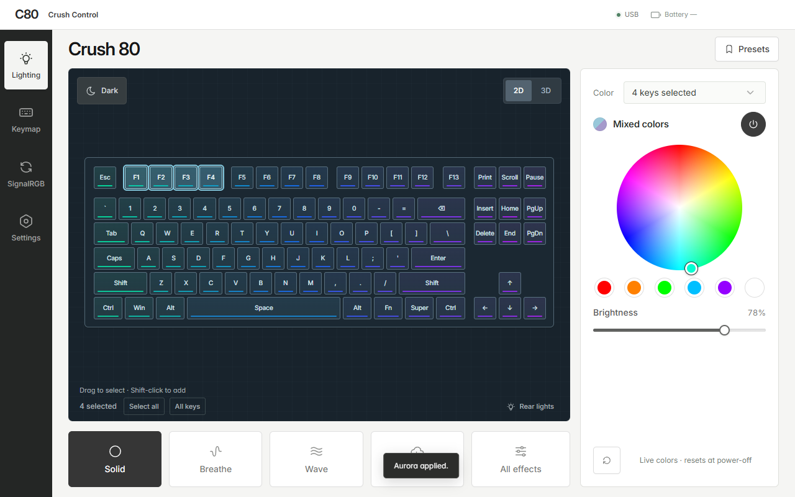

Select, then color
Click a key, drag across a group or Shift-click to add more. Leave the rest dark for a focused gaming layout.
Independent Windows app · by mi0ir
Lighting, presets and a clearer view of your Crush 80 Pro. Start with a simple 2D layout. Switch to 3D when you want a closer look.
Experimental evaluation build. Check your model and firmware before using per-key controls.
Release notes
App interface shown with a demonstration color pattern. Per-key features require supported custom firmware.
At your desk
Click a key, drag across a group or Shift-click to add more. Leave the rest dark for a focused gaming layout.
Start with WASD Only, Neon Split or Aurora. Save your own named presets on this PC and recall them from the tray.
Link the tested keyboard and its paired 2.4 GHz dongle once over USB. Then use the picker and presets wirelessly.
Experimental · supported firmware onlyCheck release notes in the app, download a verified update and choose when to restart. App updates keep your PC profiles.
Before you download
Validated on one specific Crush 80 Pro. A matching product name alone does not establish compatibility.
Custom firmware is only for the same tested Crush 80 Pro hardware and firmware revision. Other Crush 80 variants and Pro revisions are not validated. This app does not include or install firmware.
0x5566DDF2, and its expected PKRG v2 capabilities. Settings → Firmware setup checks compatibility.320F:5088 receiver are experimental. Bluetooth RGB control is not implemented. Do not re-pair a linked receiver to another board.Good to know
This beta does not yet have a Windows Authenticode certificate. Download only from this project's GitHub Releases. The app uses its own release signatures to verify later updates; these do not replace Windows signing or remove SmartScreen warnings.
Your named preset is saved on the PC. Per-key colors are live keyboard memory and reset when the keyboard loses power, so apply the saved preset again. Clear Keys turns off the main keys; the rear feet and heartbeat are separate. The heartbeat/status animation keeps its native behavior.
Quit SignalRGB and other keyboard controllers before using Crush Control's direct lighting controls. The installed app blocks direct RGB writes while it detects SignalRGB running. Its separate SignalRGB plugin provides whole-board color, not per-key streaming.
Install this updater-enabled version manually the first time. Later, Settings → App updates lets you check, read release notes, download and choose Restart and install. Checks do not automatically download or install. Presets and linked-receiver settings use the same PC profile. App updates never flash the keyboard.
No. Crush Control is an independent project by mi0ir, without endorsement from WOBKEY. This is experimental evaluation software, not a general compatibility or recovery guarantee. No firmware is distributed here. The app's source remains private; third-party components retain their own licenses.